Rivais de Ixalan foi lançado e trouxe muitos cards para a tribo dos dinossauros. Infelizmente, apesar da grande variedade de cartas, quase nenhuma delas traz uma sinergia boa o suficiente para jogar contra os grandes decks competitivos do momento.
Mas não fique triste, podemos fazer um bom deck para jogar contra todos e ainda se divertir! Vamos dar uma olhada.
 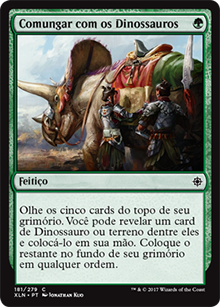
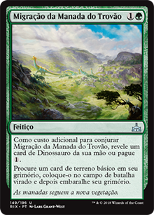
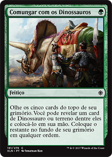
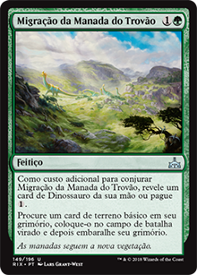
Esses cards são nossa base de mana e ramp para jogar dinossauros grandes o mais rápido possível. Mestre de Caça de Otepec diminui o custo de mana dos dinossauros e concede ímpeto, é uma habilidade poderosa, então esse card deve ser jogado assim que pudermos. Tropeiro do Poderoso não da ímpeto, mas eles consertam nossa base de mana se você tiver que jogar cards vermelhos, já que nossa base de mana é quase inteiramente verde.
Comungar com os Dinossauros é um grande feitiço, porque assim como o Tropeiro, eles podem consertar a base de mana, e se você não precisar de terreno, basta pegar um bom dinossauro, e este card custa apenas uma floresta. Migração da Manada do Trovão é uma das melhores cartas que o Rivais de Ixalan trouxe para esta tribo, um feitiço com custo 1G que coloca um terreno básico em jogo virado faz um ramp muito bom. É quase certo que você terá quatro terrenos no campo de batalha no terceiro turno, se este card foi usado na turno anterior.

 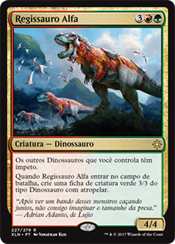
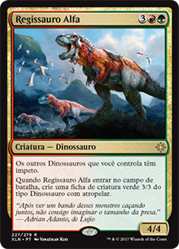
Com estes cards nós começamos a brincadeira. Todos eles podem entrar no campo de batalha antes do seu custo de mana, porque nesta altura já teremos usado alguma carta de redução de custo ou ramp nos primeiros turnos.
Pisoteamento Selvagem é o nosso único e melhor card de remoção de todo o deck. Não é uma mágica instantânea, mas funciona perfeitamente com um Carniceiro Gorja da Morte e um Raptor Maxilácero.
Carniceiro Gorja da Morte é um card bem agressivo, você pode fazer com que ele entre com o +1/+1 removendo uma criatura de algum cemitério, fazendo-o ficar 4/3. Depois, coloque um marcardor +1/+1 nele com o Pisoteamento Selvagem e faça-o lutar contra uma criatura de um adversário, depois dê ímpeto a ele com um Mestre de Caça de Otepec. Ainda não acabou: quando ele atacar, remova a criatura do cemitério que ele lutou neste turno e dê mais uma vez +1/+1 para ele até o final do turno. Resultado final: você removeu uma criatura do oponente de jogo, exilou duas do cemitério e deixou o Carniceiro 6/4 com ímpeto no terceiro turno.
Raptor Maxilácero pode entrar no terceiro turno com ímpeto (Mestre de Caça de Otepec brilhando novamente), uma 4/5 entrando tão cedo no jogo e toda vez que leva dano, você compra um card. É uma opção bem forte, qualquer deck de dinossauro deve ter ela.
Regissauro Alfa? Um dinossauro 4/4 com um companheiro 3/3 atropelando (7 de poder no total por 4 ou 5 de mana), e ainda faz com que todos os seus outros dinossauros tenham ímpeto. Apenas lembrando: você pode virar um Mestre de Caça de Otepec para dar ímpeto para ele também.
 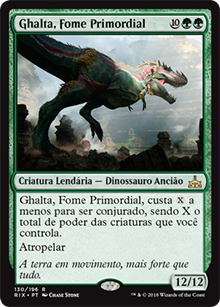
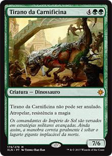
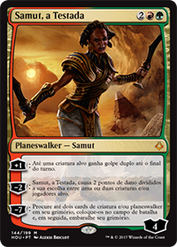
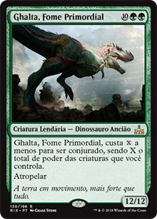
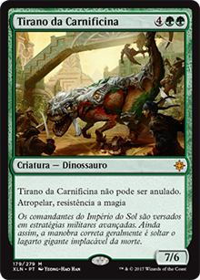
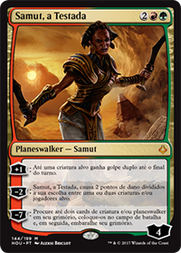
Estes cards são os nossos grandes finalizadores de jogo do nosso deck. Quando qualquer um deles entra no campo de batalha, os oponentes visivelmente se desesperam. E com razão.
Etali, Tormenta Primordial é um card de aposta. Quando você ataca com ele, você pode jogar algo de graça, ou não. Se você tiver azar, exilará um terreno seu e/ou do oponente. Mas apenas o fato de exilar o card do topo do seu grimório e de seus oponentes e podendo jogá-los sem pagar custo de mana, é algo bem forte. Sem contar que ela é uma 6/6. Mestre de Caça de Otepec, já sabe.
O card mais poderoso/prioritário para ser jogador neste deck é o Ghalta. Se você já tem um Regissauro Alfa ou um Mestre de Caça de Otepec, ela pode entrar no turno 5 com ímpeto! Uma 12/12
com ímpeto no quinto turno é um pesadelo para seus oponentes caso eles não possam anular, destruir ou removê-la o mais rápido possível. Além disso, o planewswalker Samut pode dar golpe duplo para este dinossauro. Fim de jogo.
Tirano da Carnificina é INSANO. Um 7/6 atropelando, sem poder ser anulado e com resistência a magia, é simplesmente INSANO. É absolutamente o melhor finalizador do deck contra decks de controle, e nada mal contra outros decks que não tenham remove ou anular, caso você não tenha uma Ghalta em mãos. Motivo? Repetindo: ele não pode ser anulado, nem praticamente removido ou destruído, contra decks de controle é essencial. E contra decks que não sejam de controle é extremamente forte também.
Samut, a Testada é a melhor escolha de todos os planeswalkers no formato Standard para este deck. Você pode dar golpe duplo para seus dinossauros, causar 2 de dano dividido de sua escolha para qualquer alvo (incluindo jogadores), podendo combar com o Raptor Maxilácero para comprar cards ou remover uma criatura do adversário. A habilidade final é um finalizador, muito forte e podemos colocar dois de todos os nossos dinossauros do deck no campo de batalha.
Espero que vocês tenham gostado deste deck, de todos os decks que já testamos, esse foi o que obteve melhor resultado contra decks competitivos.
Tenham um ótimo dia!
a.